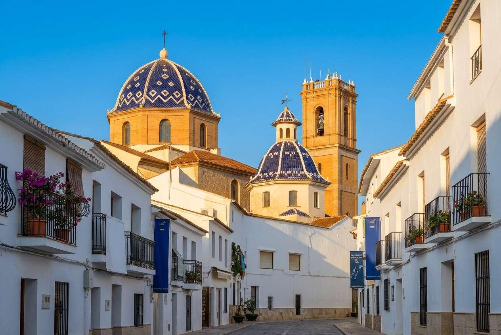
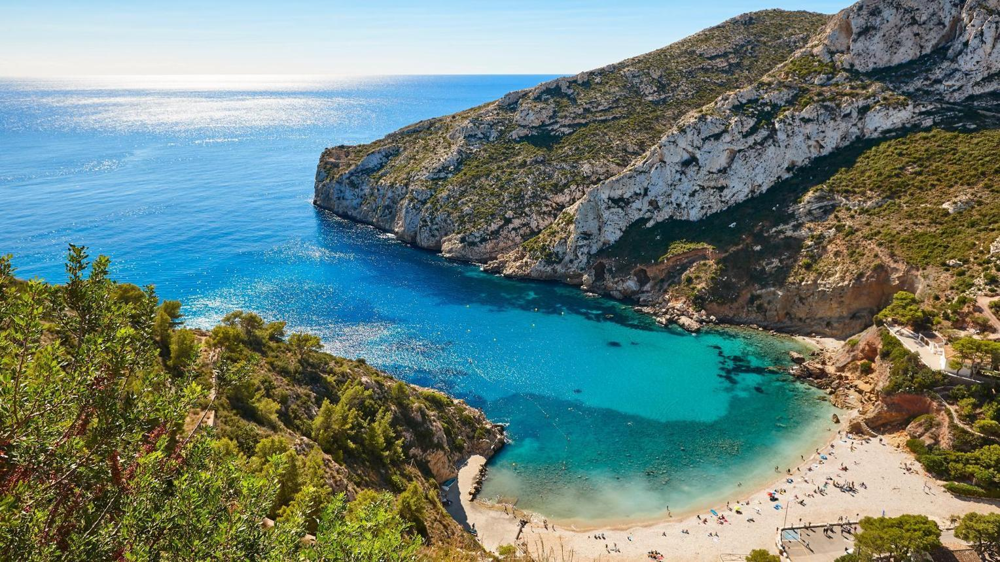
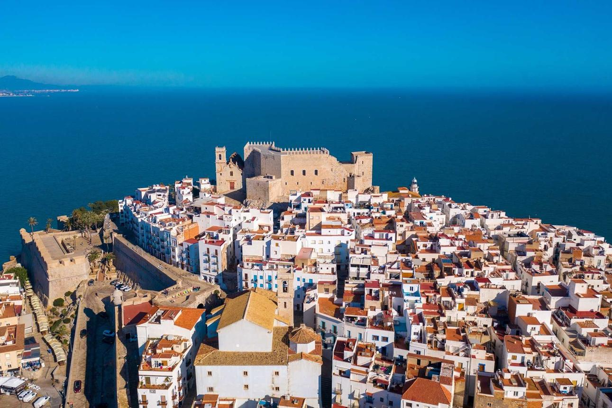
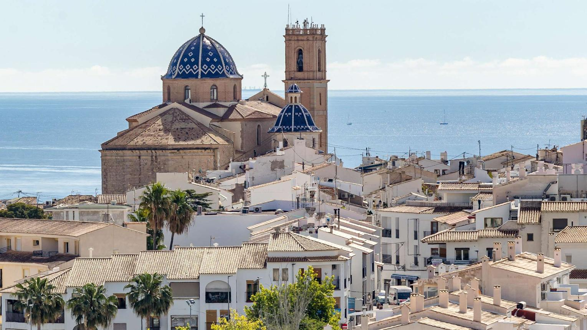
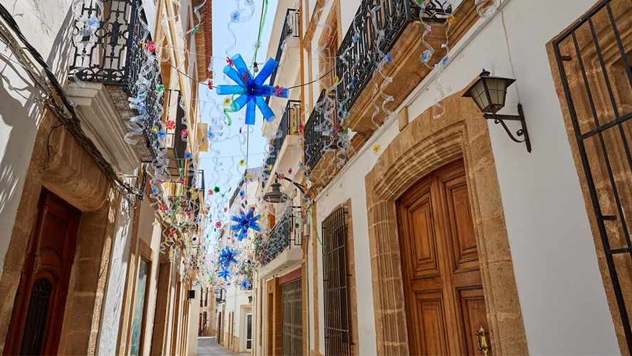
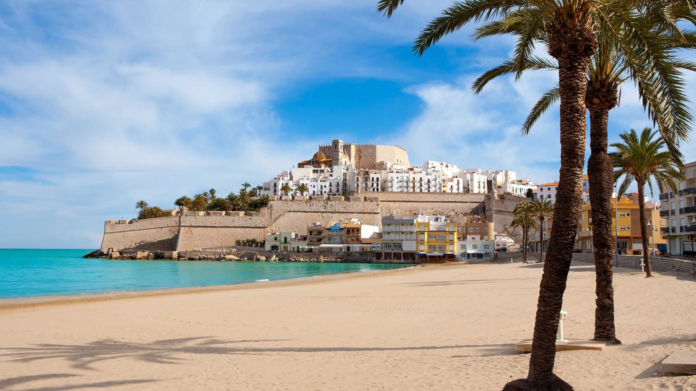

COMUNIDAD VALENCIANA
Altea
Calles blancas, miradores al Mediterráneo y ricones llenos de encanto. Altea es un destino perfecto para una escapada de fin de semana.
Descubrir destinos →







DESCUBRE · VIAJA · DISFRUTA
Descubre lugares con encanto, pequeñas ciudades y ricones perfectos para disfrutar de un fin de semana.
Explorar DestinosNUESTROS FAVORITOS
COMUNIDAD VALENCIANA
Calles blancas, miradores al Mediterráneo y ricones llenos de encanto. Altea es un destino perfecto para una escapada de fin de semana.
Descubrir destinos →
CASTELLON
Una villa medieval rodeada de naturaleza, perfecta para descubrir su historia y disfrutar de la gastronomía local.
Descubrir destinos →ALICANTE
Calas, mar Mediterráneo y rincones con encanto para disfrutar de una escapada junto al mar. Jávea es un destino ideal para desconectar.
Descubrir destinos →CASTELLON
Un destino con historia, mar, calles con encanto y un impresionante catillo que domina la costa, lo que convierte esta localidad en una escapada especial.
Descubrir destinos →